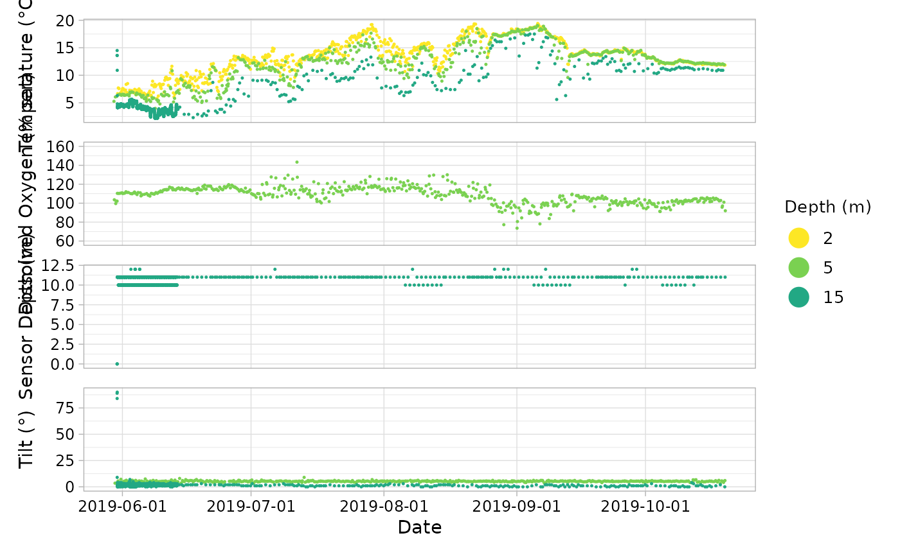
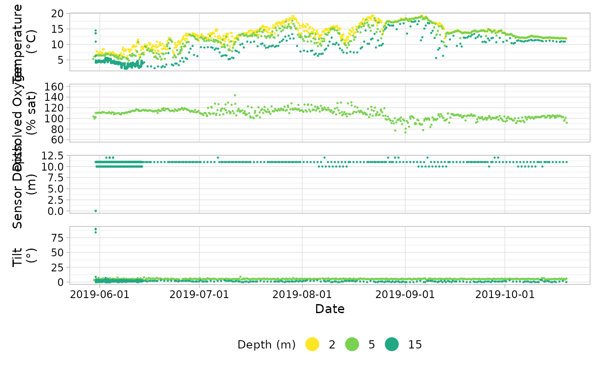

Exports figure of variable(s) at depth over time.
Source:R/ss_plot_variables.R
ss_plot_variables.RdOutput is not compatible with ggplot2 functions or ggplotly(). Use
ss_ggplot_variables() to work with those functions.
Usage
ss_plot_variables(
dat,
colour_palette = NULL,
date_breaks_major = NULL,
date_breaks_minor = NULL,
date_labels_format = "%Y-%m-%d",
standard_do_ylims = TRUE,
standard_ph_ylims = TRUE,
standard_sal_ylims = TRUE,
yaxis_newline = FALSE,
alpha = 1,
legend_name = "Depth (m)",
legend_position = "right"
)Arguments
- dat
Water Quality data in long or wide format.
- colour_palette
Colour palette of hex colours onto which
sensor_depth_at_low_tide_mwill be mapped. Default isrev(viridis(6, option = "D")).- date_breaks_major
Intervals for major breaks. Default is selected by
get_xaxis_breaks().- date_breaks_minor
Intervals for minor breaks. Default selected by
get_xaxis_breaks().- date_labels_format
Format for the date labels. Default is YYYY-mm-dd.
- standard_do_ylims
If
TRUE, the y-limits for dissolved oxygen are set to c(60, 160) % or c(0, 15) mg/L. IfFALSE, the y-limits are set to theggplotdefault. Alternatively, a vector giving custom y-limits for the dissolved oxygen panel.- standard_ph_ylims
If
TRUE, the y-limits for pH are set to c(7.5, 8.5) pH units. IfFALSE, the y-limits are set to theggplotdefault. Alternatively, a vector giving custom y-limits for the pH panel.- standard_sal_ylims
If
TRUE, the y-limits for salinity are set to c(25, 34) PSU. IfFALSE, the y-limits are set to theggplotdefault. Alternatively, a vector giving custom y-limits for the salinity panel.- yaxis_newline
Logical argument indicating whether the units in the y-axis label should be on a new line. Default is
FALSE.- alpha
Value indicating the transparency of the points. 0 is most transparent; 1 is opaque.
- legend_name
Name for the legend. Must be a character string. Default is
legend_name = "Depth (m)".- legend_position
Position for the legend. Passed to
patchwork. Default islegend_position = "right".
Value
Returns a patchwork object, a single figure with the plots for each
variable in dat stacked in a column.
Examples
dat <- ss_compile_deployment_data(system.file("extdata", package = "sensorstrings"))
#> aquameasure data compiled
#> hobo data compiled
#> vemco data from sensor << 547109 >> compiled: Temperature & Seawater depth
ss_plot_variables(dat)

# the legend on the bottom, units on a second line, and custom DO limits
ss_plot_variables(
dat,
legend_position = "bottom",
yaxis_newline = TRUE,
standard_do_ylims = c(70, 150)
)
